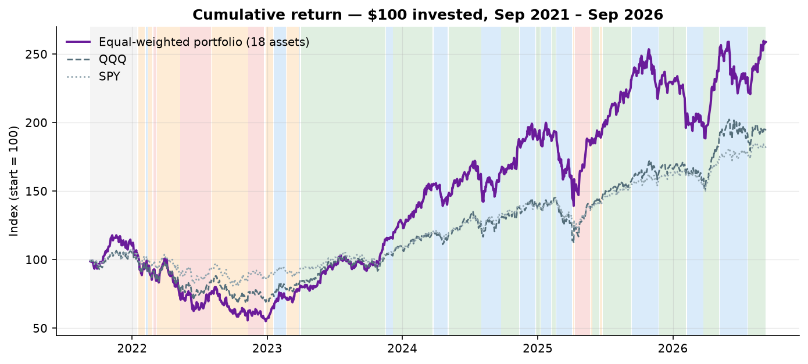
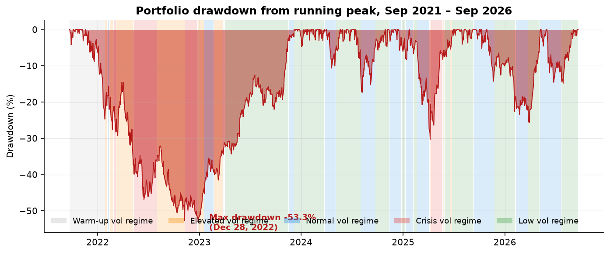
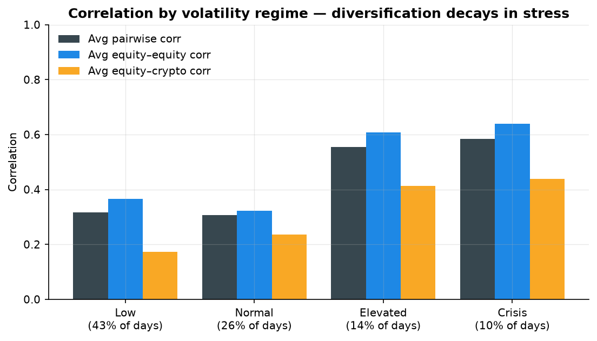
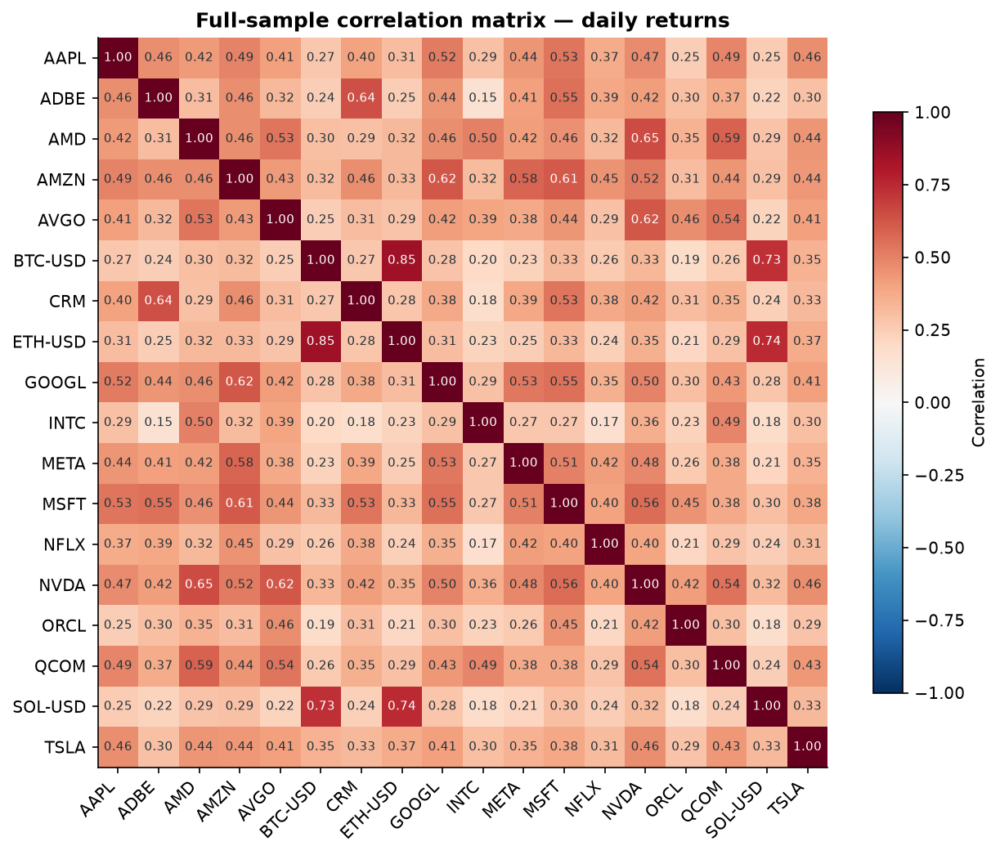
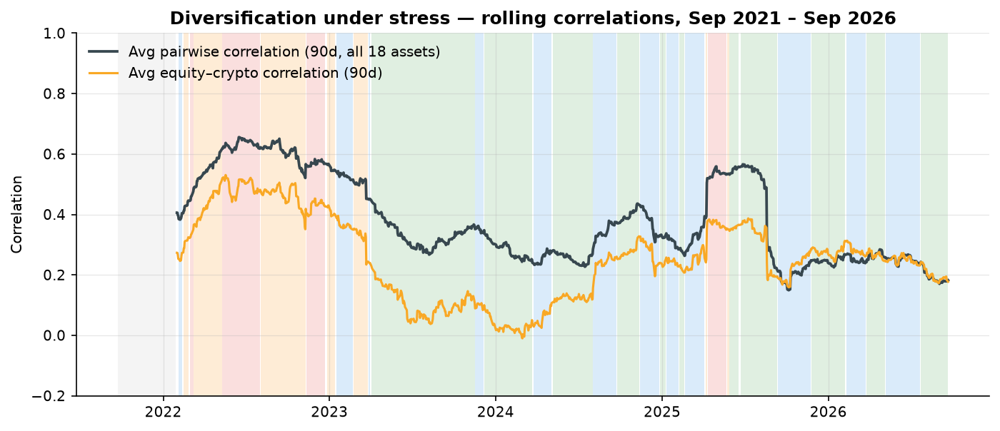
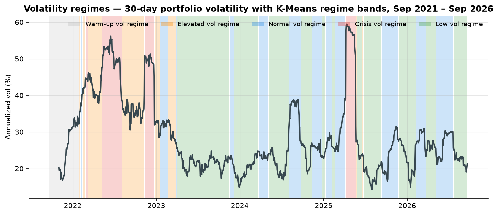
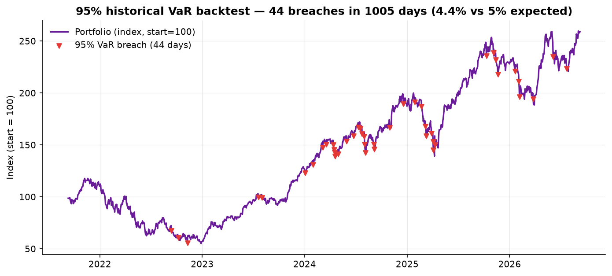

Portfolio CAGR
21.3%
Equal-weighted, rf = 0
Where are we, how bad has it been, and is risk elevated now?
Indexed to 100 · portfolio versus QQQ and SPY

Peak-to-trough loss with volatility-regime bands

Current estimates; sort in the live Power BI table
| Asset | CAGR | Ann. vol | 1D VaR 95% | Max DD |
|---|---|---|---|---|
| SOLSolana | -8.5% | 92.1% | 6.5% | -96.1% |
| ETHEthereum | -7.0% | 69.5% | 5.9% | -78.4% |
| TSLATesla Inc. | 7.4% | 59.9% | 4.6% | -73.6% |
| AMDAdvanced Micro Devices | 36.4% | 57.3% | 5.7% | -65.4% |
| INTCIntel Corp. | 14.0% | 54.9% | 6.2% | -65.0% |
| BTCBitcoin | 9.9% | 52.5% | 4.2% | -76.6% |
What the dashboard is telling the investment committee
Average pairwise correlation rises to 0.58 in Crisis versus 0.32 in Low. The risk budget should be sized to stress correlations, not just the current calm tape.
Vol = STDEV(daily returns) × √252 VaR95 = −PERCENTILE.INC(last 250 returns, 5%)Flip the regime lens and watch diversification decay under stress.
Selected matrix scope
Cross-sleeve co-movement
Portfolio, annualized
Unique off-diagonal pairs
Portfolio-wide and cross-sleeve relationships move together when volatility rises.

Preview behavior: the selector updates the KPI scope above. In the live Power BI build, the same scope filters the correlation matrix below through corr_long[scope].
Full-sample heatmap · fixed −1 to +1 color scale

90-day average pairwise and equity–crypto correlation

Make volatility states visible, measurable, and operational.
30-day portfolio volatility with K-Means bands

Observed breaches versus the 5% design level

Most recent spells first · click through in Power BI
| Regime | Start | End | Length |
|---|---|---|---|
| Low | 2026-07-23 | 2026-09-14 | 37d |
| Normal | 2026-05-07 | 2026-07-22 | 52d |
| Low | 2026-03-25 | 2026-05-06 | 30d |
| Normal | 2026-02-09 | 2026-03-24 | 31d |
| Low | 2025-11-25 | 2026-02-06 | 50d |
| Normal | 2025-09-12 | 2025-11-24 | 52d |
Operational interpretation of the model output
Monitor carry and concentration; do not let calm volatility mechanically increase risk limits.
Review exposures and hedge capacity; stress-test using the higher-correlation matrix.
Size to crisis volatility, activate the pre-agreed de-risking playbook, and monitor VaR breach clusters.